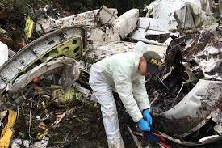
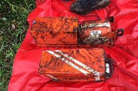
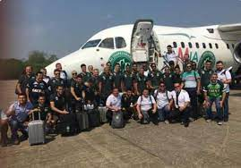
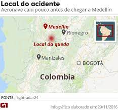

Avião com equipe da Chapecoense cai na Colômbia e deixa mortos
Unidade de desastres diz que 71 corpos foram resgatados; 6 sobreviveram.
Avião decolou de Santa Cruz de la Sierra (Bolívia) com destino a Medellín.

Um avião que levava a delegação da Chapecoense para Medellín, na Colômbia, caiu na madrugada desta terça-feira (29) a poucos quilômetros da cidade colombiana.
O Diretor Geral da Unidade Nacional para Gestão de Risco e Desastres colombiana, Carlos Iván Márquez Pérez, disse que as operações de busca e resgate foram encerradas com o seguinte balanço: 6 feridos e 71 mortos.
Anteriormente a Aeronáutica Civil havia informado que 72 corpos foram resgatados, mas o órgão já corrigiu a informação para 71. Os corpos serão levados para uma base da Força Aérea, de onde seguirão para o Instituto Médico Legal de Medellín.
Seis pessoas foram resgatadas com vida e estão no hospital: os jogadores Alan Ruschel, Neto e Follmann, o jornalista Rafael Henzel, o técnico da aeronave Erwin Tumiri e a comissária de bordo Ximena Suarez. O goleiro Danilo também tinha sido resgatado com vida, mas morreu no hospital.
O avião da LaMia, matrícula CP2933, decolou de Santa Cruz de la Sierra, na Bolívia, com destino a Medellín com a delegação do time, jornalistas e convidados. Segundo as autoridades colombianas, a lista do voo tinha 81 nomes: 72 passageiros e 9 tripulantes.
No entanto, a relação inclui quatro pessoas que não embarcaram e estão vivas. Não há confirmação se outras pessoas embarcaram no lugar delas. Seis funcionários da Fox Sports, entre eles o ex-jogador e comentarista Mário Sérgio, estavam no avião.
As duas caixas-pretas da aeronave foram encontradas. As autoridades britânicas anunciaram o envio à Colômbia de três investigadores para analisar a cena do acidente – o avião da companhia boliviana LaMia foi fabricado pela British Aerospace.
O vice-presidente da Chapecoense, Ivan Tozzo, disse que um grupo de médicos embarca nesta terça para Medellín para identificar os corpos, que devem ser liberados a partir de quinta-feira (1º). Segundo ele, há intenção de fazer um velório coletivo no estádio do time em Chapecó.

O ACIDENTE
O voo que transportava a equipe da Chapecoense partiu na noite de segunda-feira de Santa Cruz de La Sierra, na Bolívia, em direção a Medellín. Em coletiva de imprensa, Julio César Varela, da Direção Geral de Aeronáutica Civil boliviana, disse que o avião decolou em "perfeitas condições".
Segundo a imprensa local, a aeronave perdeu contato com a torre de controle às 22h15 (1h15 na hora de Brasília), entre as cidades de La Ceja e Abejorral, e caiu ao se aproximar do Aeroporto José Maria Córdova, em Rionegro, perto de Medellín.
O Comitê de Operação de Emergência (COE) e a gerência do aeroporto informaram que a aeronave se declarou em emergência por falha técnica às 22h (local) entre as cidades de Ceja e La Unión.
O diretor da Aeronáutica Civil, Alfredo Bocanegra, explicou à Rádio Nacional da Colômbia que, embora chovesse e houvesse neblina na região, o aeroporto Rionegro estava operando normalmente. Segundo ele, aparentemente foram falhas elétricas que causaram o acidente. O piloto relatou problemas à torre de controle do aeroporto de Santa Cruz, na Bolívia.
Mais cedo, a imprensa colombiana chegou a cogitar como causa a falta de combustível, mas também informou que o piloto despejou combustível após perceber que o avião iria cair.


Uma operação de emergência foi ativada para atender ao acidente. A Força Aérea Colombiana dispôs helicópteros para ajudar em trabalhos de resgate, mas missões de voos foram abortadas nesta madrugada por causa das condições climáticas.
Choveu muito na região na noite de segunda, o que reduziu a visibilidade. Equipes chegaram ao local do acidente por terra, mas o acesso à região montanhosa é difícil e a remoção é lenta.
FINAL DE CAMPEONATO
O time da Chapecoense embarcou para a Colômbia para disputar a primeira partida da final da Copa Sul-Americana, contra o Atlético Nacional, que estava marcada para quarta-feira (30). Inicialmente, o voo iria diretamente de Guarulhos (SP) para Medellín, mas o voo foi vetado pela Agência Nacional de Aviação Civil (Anac).
Em razão do veto, a equipe tomou um voo comercial até a Bolívia e, de lá, o grupo pegou o voo da LaMia.